Онлайн-колледж — это цифровой колледж, в котором образовательный процесс строится в дистанционном формате и опирается на современные образовательные и информационные технологии. Здесь занятия проходят в режиме онлайн, учебный материал доступен на образовательных платформах, а студенты получают знания в удобном формате учебы. Колледжи предлагают программы среднего профессионального образования, которые позволяют студенту учиться дистанционно, совмещать учебу с работой и готовиться к выбранным специальностям. После окончания обучения выпускники получают государственные дипломы, а форматы обучения остаются гибкими и доступными онлайн. Мы составили рейтинг таких колледжей, чтобы помочь абитуриентам выбрать профессию и оформить поступление без лишних сложностей.
Информация обновлена:
ТОП онлайн-колледжей
- 🏆 Московский Институт Технологий и управления (MITM) (по промокоду Partners15 скидка 🎁 15%)
- 🏆 Национальный социально-педагогический колледж
- 🏆 Открытый социально-экономический колледж
- Московский Технологический Институт (МТИ)strong>
- Московский Институт Профессионального Образования (МИПО) (по промокоду onlinekursy скидка 🎁 10%)
- Институт Прикладной Психологии (ИППСС)
- TOP IT College
- Фоксфорд Колледж
- Цифровой колледж Skillbox
- IT-колледж Хекслет
- Колледж Университета Синергия
- Колледж КЭСИ
Отличительные преимущества каждой дистанционной программы обучения онлайн-колледжей
| № | Название курса и школы | Отличительные преимущества | |
|---|---|---|---|
| 🥇 | MITM College | Самый широкий спектр направлений (СПО, бакалавриат, магистратура, переподготовка); гибкое помесячное обучение; большой набор технических, творческих и гуманитарных специальностей. | Перейти |
| 🥈 | Национальный социально-педагогический колледж | Две квалификации: СПО + диплом профпереподготовки; сильная педагогическая направленность; полностью дистанционный режим без экзаменов. | Перейти |
| 🥉 | Открытый социально | Система двух дипломов; большой выбор социально-экономических специальностей; акцент на заочном формате без указания его в дипломе. | Перейти |
| 4 | МТИ | Обучение в колледже при аккредитованном московском институте с получением диплома государственного образца и международного приложения, выбором востребованных специальностей и доступными форматами обучения. | Перейти |
| 5 | МИПО | Востребованные направления обучения, помощь центра занятости в трудоустройстве, участие компаний-партнёров в подготовке студентов и возможность получить практический опыт во время обучения. | Перейти |
| 6 | ИППСС | Дистанционное обучение без ЕГЭ и вступительных экзаменов с получением двух дипломов государственного и установленного образца и дополнительной психологической специализацией. | Перейти |
| 7 | TOP IT College | Сильная цифровая специализация (AI, кибербезопасность, IT-юриспруденция); акцент на проектах и практических занятиях; смешанные форматы. | Перейти |
| 8 | Фоксфорд Колледж | Минимальная стоимость при господдержке; обучение с живыми лекциями; двойные дипломы (СПО + переподготовка), сильная IT-ориентация. | Перейти |
| 9 | Цифровой колледж Skillbox | Полностью дистанционный формат; специализированные IT-направления; глубокий упор на практику; большие скидки; курс по ИИ в подарок. | Перейти |
| 10 | IT-колледж Хекслет | Обучение с действующими IT-практиками; много IT-направлений включая AR/VR и киберспорт; возможность поступления в вузы без ЕГЭ. | Перейти |
| 11 | Колледж Университета Синергия | Огромный выбор направлений: IT, медицина, творческие специальности; обучение в любых форматах (очно/очно-заочно/дистанционно); развитая карьерная поддержка. | Перейти |
| 12 | Колледж КЭСИ | Полностью дистанционный онлайн-кампус 24/7; возможность получить сразу две специальности; расширенный доступ к библиотеке и автоматизированная проверка. | Перейти |
1. 🏆 MITM College
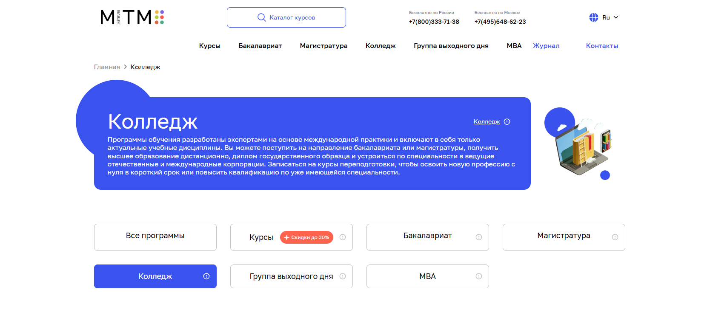
✅ Официальный сайт: mitm.institute
- 💸 Стоимость – действует акция Black Friday со скидками до 30 %, помесячная оплата без переплат
- 📚 Формат – обучение в дистанционном формате, занятия проходят онлайн, используются электронные учебные материалы, видеолекции, тесты, практические задания, консультации с преподавателями
- ⏳ Продолжительность – сроком обучения от 2 до 58 месяцев в зависимости от программы
- 📜 Документ – выпускники получают дипломы государственных образцов, удостоверения о повышении квалификации или документы о профессиональной переподготовке
MITM College предоставляет студентам современные форматы обучения и возможность поступить после 9 классов. Образовательный процесс выстроен в удобном формате, а занятия проходят дистанционно с применением дистанционных технологий и цифровых платформ. Студенты обучаются в режиме онлайн, используют информационные технологии и получают качественные знания, которые позволяют выпускникам успешно трудоустраиваться. Колледжи предлагают программы среднего профессионального образования, ориентированные на практические навыки и актуальные специальности. Благодаря гибкому формату учебы абитуриенты совмещают учебу с работой, имеют доступ к электронным ресурсам и поддержке преподавателей. Окончания обучения сопровождается получением дипломов государственных образцов, что открывает путь к карьерному росту. Образование дистанционно удобно для тех, кто ищет любое удобное расписание и хочет выбрать профессию с применением современных образовательных технологий.
Направления подготовки:
- Бакалавриат: менеджмент, экономика, информатика, маркетинг, строительство, юриспруденция, педагогическое образование
- Магистратура: менеджмент, экономика, маркетинг, IT-направления
- Колледж: туризм и гостеприимство, бухгалтерский учет, юриспруденция, интернет-маркетинг, торговое дело, информационные системы, банковское дело, электрооборудование, экономика и учет, программирование, геймдев, мехатроника и робототехника, цифровые медиа, предпринимательство, педагогика, финансы, строительство, дизайн, черчение
- Переподготовка и повышение квалификации: программы различных направлений для получения нового профессионального уровня
Преимущества и особенности:
- современных образовательных технологий и применение цифровых решений в обучении;
- все занятия проходят онлайн, что позволяет студенту выбрать любую форму учебы;
- отсутствие вступительных экзаменов и возможность поступить по аттестату после 9 классов;
- поддержка преподавателей и кураторов на всех этапах процесса обучения;
- доступ к электронным учебным материалам и интерактивным заданиям;
- программы разработаны экспертами международных практик и ориентированы на профессиональную подготовку;
- карьерная поддержка и помощь трудоустройству выпускников;
- гибкий график занятий, позволяющий совмещать учебу и работу.
Отзывы учеников:
Студенты отмечают удобный дистанционный формат, структурированные учебные программы и активную поддержку преподавателей. В отзывах часто подчеркивают доступность объяснений, практическую направленность занятий и возможность совмещать учебу с работой. Многим нравится персональный подход кураторов и современная подача материала.
Перейти на официальный сайт52. 🏆 Национальный социально-педагогический колледж
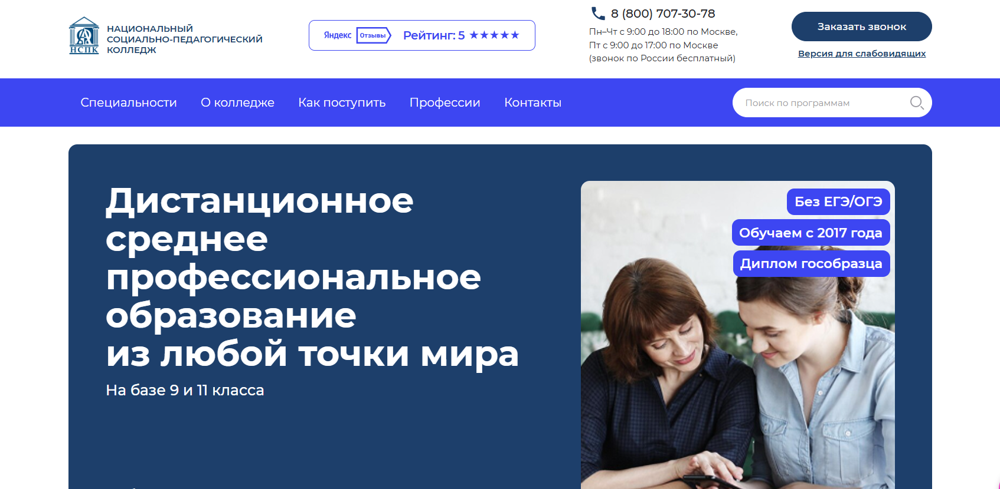
✅ Официальный сайт: distant-college.ru
- 💸 Стоимость – от 27 200 ₽ до 50 000 ₽ за семестр в зависимости от выбранной специальности и базы поступления.
- 📚 Формат – обучение проходит в дистанционном формате: видеолекции, электронные учебные материалы, тесты, задания, консультации и поддержка преподавателей; занятия проходят онлайн в любое удобное время.
- ⏳ Продолжительность – от 1 года 11 месяцев до 3 лет 11 месяцев, сроки зависят от направления и наличия аттестата после 9 или 11 классов.
- 📜 Документ – выпускники получают дипломы государственных образцов о среднем профессиональном образовании, а также дополнительный диплом о профпереподготовке.
Колледж предоставляет студентам современные образовательные программы, которые реализуются с применением дистанционных технологий и ориентированы на гибкий режим онлайн. Учебный процесс выстроен так, что занятия проходят дистанционно и подходят тем, кто совмещает учебу и работу. Учебные программы созданы по требованиям ФГОС, а студенты получают качественные знания благодаря электронным учебным материалам и поддержке педагогов. Дистанционный формат позволяет выпускникам школ из любых регионов поступить и учиться дистанционно без вступительных экзаменов. Образование доступно на базе 9 классов и 11 классов, при этом форматы обучения дают возможность выбрать профессию и получить среднее профессиональное образование дистанционно. После окончания обучения выпускники получают дипломы государственных образцов, что позволяет выпускникам успешно трудоустраиваться и развивать профессиональные навыки. Колледж использует образовательные платформы и современные образовательные технологии, что делает процессом обучения удобным и гибким. Для многих студентов удобно, что занятия проходят полностью дистанционно и позволяют совмещать учебу и личные дела.
Направления подготовки:
- Дошкольное образование
- Преподавание в начальных классах
- Коррекционная педагогика в начальном образовании
- Специальное дошкольное образование
- Социальная работа
- Документационное обеспечение управления и архивоведение
- Педагогика дополнительного образования (художественно-прикладная, социально-педагогическая, физкультурно-оздоровительная)
- Финансы
- Туризм и гостеприимство
Преимущества и особенности:
- система двух дипломов – государственный диплом СПО плюс диплом о профпереподготовке;
- возможность учиться дистанционно в режиме онлайн из любой точки мира;
- обучение без ОГЭ и ЕГЭ, нужен только аттестат;
- аккредитация и лицензия, подтверждающие качество образовательных программ;
- актуальные специальности, которые востребованы работодателями и государством;
- поддержка преподавателей и кураторов на всех этапах обучения;
- гибкий формат учебы, подходящий для тех, кто совмещает учебу и работу;
- использование цифровых технологий и удобных образовательных платформ.
Отзывы учеников:
Студенты отмечают удобный формат обучения, понятные материалы и возможность совмещать учебу с работой. В отзывах часто подчеркивают отзывчивость преподавателей, доступность учебных материалов и удобное мобильное приложение. Многие пишут, что учатся дистанционно без стресса, а занятия проходят онлайн в любое удобное время. Также выделяют качественные программы, поддержку кураторов и возможность быстро получить профессию.
Перейти на официальный сайт3. 🏆 Открытый социально-экономический колледж
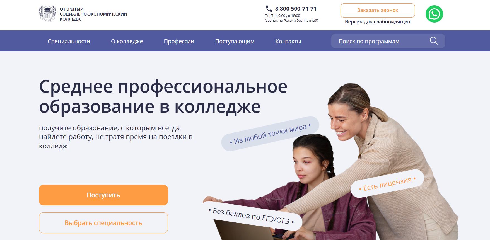
✅ Официальный сайт: pk.i-spo.ru
- 💸 Стоимость – обучение варьируется от 28 500 до 55 000 руб. за семестр в зависимости от специальности и базы 9 или 11 классов
- 📚 Формат – занятия проходят в дистанционном формате, учебные материалы размещаются на образовательных платформах, студенты работают с электронных учебных материалов, изучают теорию, выполняют задания и тесты, участвуют в практических занятиях, которые проходят онлайн
- ⏳ Продолжительность – сроком обучения от 1 года 11 мес. до 3 лет 11 мес. в зависимости от программы и уровня поступления
- 📜 Документ – выпускники получают дипломы государственных образцов среднего профессионального образования, а также диплом установленного образца о профпереподготовке при выборе системы двух дипломов
Колледж развивает образовательный процесс в полностью дистанционном учебном пространстве, используя современные образовательные технологии и дистанционные технологии, что делает формат учебы гибким и удобным. Учебные программы разработаны в соответствии с государственными образовательными стандартами и предоставляют студентам возможность осваивать востребованные направления. Здесь студенты получают качественные знания, совмещают учебу с работой и достигают получения среднего профессионального образования без очного формата. Программы реализуются в режиме онлайн, занятия проходят дистанционно, что обеспечивает любое удобное время для учебы. Колледж предоставляет студентам доступ к цифровых технологий, поддержке преподавателей и современным информационных технологиях, позволяющим выпускникам 9 классов и выпускников школ быстрее адаптироваться к цифровой экономике. Учусь дистанционно здесь можно из любой точки мира, а образовательный процесс выстроен так, чтобы студенты проходили материал последовательно и эффективно. Форматы обучения подходят абитуриентам, которые хотят получить среднее профессиональное образование дистанционно и выбрать профессию без вступительных экзаменов.
Направления подготовки:
- Правоохранительная деятельность
- Юриспруденция
- Экономика и бухгалтерский учет
- Туризм и гостеприимство
- Документационное обеспечение управления и архивоведение
- Финансы
- Землеустройство
- Операционная деятельность в логистике
- Банковское дело
- Социальная работа, педагогические направления, торговое дело, ветеринария и другие программы
Преимущества и особенности:
- заочное обучение с применением дистанционных технологий без указания формата в дипломе;
- возможность поступления без ЕГЭ и ОГЭ только по аттестату;
- удобный формат учебы, позволяющий совмещать занятия и работу;
- доступных онлайн программ широкого профиля для разных направлений;
- система двух дипломов позволяет выпускникам получить сразу две квалификации;
- бессрочная лицензия и государственная аккредитация гарантируют высокое качество подготовки;
- возможность получения налогового вычета и образовательного кредита с льготной ставкой;
- обучение построено на современных образовательных технологиях и электронных учебных процессах.
Отзывы учеников:
Студенты отмечают удобный дистанционный формат, возможность совмещать учебу с работой и поддержку преподавателей. В отзывах подчеркивают понятные учебные материалы, доступность консультаций и то, что занятия проходят онлайн в удобном режиме. Многие выпускники пишут, что получают качественные знания и успешно завершают обучение, отмечая внимательность специалистов приемной комиссии и положительный опыт взаимодействия с колледжем.
Перейти на официальный сайт4. Московский технологический институт
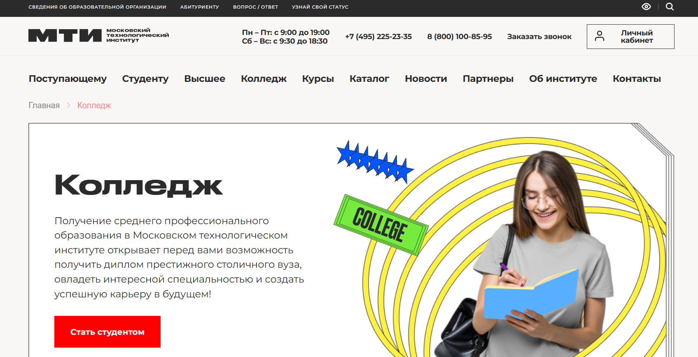
- ✅ Официальный сайт: mti.moscow
- 📚 Формат: очное, очно-заочное и заочное обучение, лекции, семинары, практические занятия, выполнение дипломной работы
- 📜 Документ: диплом государственного образца о среднем профессиональном образовании, приложение к диплому и международное приложение Diploma Supplement на английском языке
- 🔷 Для кого подходит курс: для выпускников 9 и 11 классов, абитуриентов, желающих получить среднее профессиональное образование, освоить востребованную специальность и построить карьеру
Особенности:
Колледж Московского технологического института предоставляет возможность получить среднее профессиональное образование на базе престижного столичного вуза. Студенты осваивают специальности, востребованные в экономике, IT, строительстве, логистике и других отраслях. Обучение проходит в разных форматах, включая очную, очно-заочную и заочную формы, что позволяет выбрать оптимальный вариант в зависимости от целей и возможностей. Очная форма дает возможность полностью погрузиться в образовательный процесс, посещать занятия и пользоваться студенческими льготами. Военнообязанные студенты получают отсрочку от службы на период обучения. Институт имеет бессрочную лицензию и аккредитацию, что подтверждает официальный статус образовательных программ. После завершения обучения выпускники получают диплом государственного образца с присвоением квалификации. Также доступно международное приложение к диплому, которое позволяет продолжить образование за рубежом. Студентам доступна система скидок и гибкие условия оплаты. Институт помогает студентам получить качественное образование и подготовиться к профессиональной деятельности.
Направления обучения:
- Информационные системы и программирование
- Строительство и эксплуатация зданий и сооружений
- Монтаж, наладка и эксплуатация электрооборудования промышленных и гражданских зданий
- Экономика и бухгалтерский учет (по отраслям)
- Банковское дело
- Чертежник-конструктор
- Торговое дело
- Оператор информационных систем и ресурсов
- Графический дизайнер
- Делопроизводитель
- Дошкольное образование
- Операционная деятельность в логистике
- Технология машиностроения
Преимущества:
- Диплом государственного образца с возможностью получения международного приложения
- Наличие лицензии и аккредитации на образовательную деятельность
- Выбор различных форм обучения: очная, очно-заочная и заочная
- Возможность получения отсрочки от армии для студентов очной формы
- Гибкая система оплаты и доступные условия обучения
- Большой выбор востребованных технических и экономических специальностей
- Обучение на базе московского института с современной образовательной инфраструктурой
- Возможность продолжить обучение на более высоком уровне образования
Отзывы учеников:
Студенты часто отмечают удобство различных форм обучения и возможность выбрать подходящий график. Многие положительно оценивают статус института и получение диплома государственного образца. Выпускники подчеркивают актуальность образовательных программ и востребованность полученных специальностей. Также учащиеся отмечают понятную организацию учебного процесса и возможность продолжить обучение в институте после колледжа. Среди плюсов называют доступность обучения, наличие скидок и возможность получить международное приложение к диплому. Некоторые студенты отмечают удобное расположение учебных корпусов в Москве и поддержку со стороны администрации.
5. Московский Институт Профессионального Образования
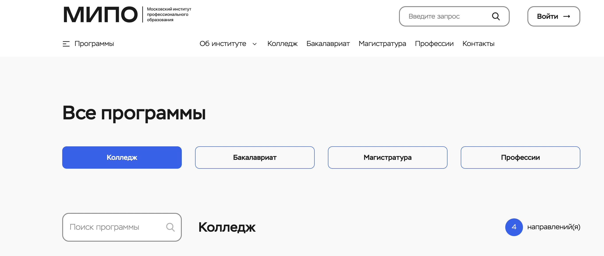
- ✅ Официальный сайт: mipo.msk.ru
- 📚 Формат: обучение по программам колледжа, участие в образовательном процессе с поддержкой института, стажировки и взаимодействие с компаниями-партнёрами
- 📜 Документ: диплом о среднем профессиональном образовании по выбранной специальности
- 🔷 Для кого подходит курс: для выпускников школ, абитуриентов, желающих получить профессию в колледже, а также для тех, кто планирует построить карьеру в сфере маркетинга, IT, дизайна и управления
Особенности:
Московский Институт Профессионального Образования реализует программы колледжа по востребованным специальностям с возможностью получения профессионального образования. Учебный процесс ориентирован на формирование практических навыков, необходимых для успешного трудоустройства. В институте работает центр занятости студентов, который помогает составить резюме и подготовиться к собеседованию. Партнёрские компании участвуют в разработке образовательных программ, что делает обучение актуальным для рынка труда. Студенты получают возможность пройти стажировку и получить реальный опыт работы. Образовательные программы охватывают современные направления, включая информационные системы, маркетинг и дизайн. Обучение в колледже позволяет получить квалификацию и начать профессиональную деятельность сразу после выпуска. Институт предлагает структурированные программы, направленные на развитие компетенций и карьерный рост. Поддержка студентов продолжается на протяжении всего обучения и после завершения образовательной программы.
Направления обучения:
- Дизайн
- Юриспруденция
- Информатика
- Маркетинг
- Менеджмент
- Психология
- Строительство
- Теплоэнергетика и теплотехника
- Педагогическое образование
- Робототехника
- Экономика
- Государственное и муниципальное управление
- Лингвистика
- Техносферная безопасность
- Управление в технических системах
- Факультет спорта
- Специалист торгового дела (CRM-маркетолог)
- Специалист торгового дела (менеджер маркетплейсов)
- Специалист по информационным системам
- Дизайнер
Преимущества:
- Работа центра занятости, который помогает студентам с трудоустройством и карьерным развитием
- Возможность прохождения стажировок в компаниях-партнёрах
- Программы обучения, ориентированные на получение практических навыков
- Актуальные специальности, востребованные на рынке труда
- Поддержка студентов при подготовке к собеседованиям и поиске работы
- Возможность получить профессиональное образование в колледже и начать карьеру
- Образовательные программы, разработанные с участием работодателей
- Удобный выбор направлений подготовки в различных сферах
Отзывы учеников:
Студенты положительно оценивают широкий выбор направлений обучения и возможность получить востребованную профессию. Многие отмечают помощь центра занятости и поддержку при поиске работы после окончания колледжа. Выпускники подчеркивают, что участие компаний-партнёров в образовательном процессе помогает получить актуальные знания и навыки. Также учащиеся выделяют удобную организацию обучения и возможность пройти стажировку во время получения образования. Среди плюсов часто упоминают практическую направленность программ и перспективы карьерного роста после получения диплома.
6. Психологический онлайн-колледж ИППСС
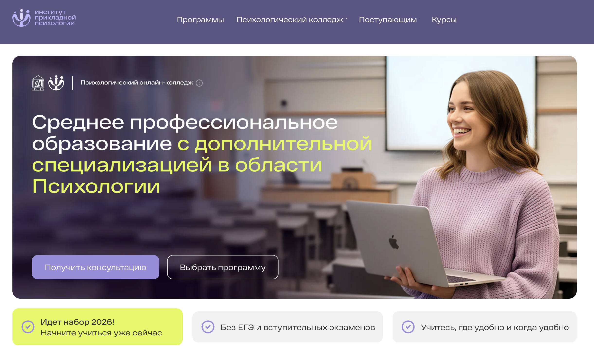
- ✅ Официальный сайт: pr.ippss.ru
- 📚 Формат: дистанционное обучение, онлайн-платформа, мобильное приложение, видеоматериалы, практические задания, тестирование, формирование портфолио
- 📜 Документ: диплом государственного образца о среднем профессиональном образовании и диплом о профессиональной переподготовке, зарегистрированные в федеральном реестре документов об образовании
- 🔷 Для кого подходит курс: для выпускников 9 и 11 классов, желающих получить профессию в сфере психологии, педагогики или социальной работы, а также для тех, кто хочет освоить помогающую профессию дистанционно
Особенности:
Психологический онлайн-колледж реализуется как совместный образовательный проект Национального социально-педагогического колледжа и Института прикладной психологии в социальной сфере. Обучение проходит полностью дистанционно, что позволяет получать среднее профессиональное образование без посещения очных занятий и без отрыва от работы или личной жизни. Программа включает академическую подготовку и дополнительную специализацию в области психологии, благодаря чему выпускники получают сразу два диплома. Основной акцент сделан на практических навыках, которые помогают выпускникам начать профессиональную деятельность сразу после завершения обучения. Учебные планы разработаны в соответствии с требованиями федеральных образовательных стандартов и направлены на подготовку специалистов помогающих профессий. Студенты получают доступ к современной образовательной платформе и мобильному приложению, где размещены все учебные материалы. В процессе обучения формируется профессиональное портфолио, которое помогает при трудоустройстве. Преподавание ведут специалисты с научными степенями и практикующие психологи. После завершения программы выпускникам предоставляется поддержка в карьерном развитии, включая консультации и помощь в поиске первых клиентов.
Направления обучения:
- Дошкольное образование с дополнительной специализацией в области психологии
- Преподавание в начальных классах с психологической специализацией
- Специальное дошкольное образование и специальная психология
- Коррекционная педагогика в начальном образовании
- Социальная работа с дополнительной психологической подготовкой
- Основы психологического консультирования
- Основы детской психологии
- Основы семейной психологии
- Специальная психология
- Логопедагогика
- Игропедагогика
- Нейропсихология взрослых
- Экстремальная психология
- Перинатальная психология
- Криминальная психология
- Прикладной анализ поведения (ABA-терапия)
- Тьюторское сопровождение детей с расстройствами аутистического спектра
- Эрготерапия
- Педагогика в сфере работы с детьми с особыми образовательными потребностями
Преимущества:
- Возможность получить среднее профессиональное образование полностью дистанционно
- Выдача двух дипломов, расширяющих возможности трудоустройства
- Поступление без ЕГЭ и вступительных экзаменов
- Обучение в удобном темпе без привязки к расписанию
- Программы соответствуют государственным образовательным стандартам
- Поддержка студентов и помощь в начале профессиональной карьеры
- Формирование портфолио в процессе обучения
- Доступ к онлайн-платформе и мобильному приложению с учебными материалами
Отзывы учеников:
Студенты отмечают удобство дистанционного формата и возможность совмещать обучение с работой или личными делами. Многие выпускники положительно оценивают получение двух дипломов, что повышает их конкурентоспособность на рынке труда. Часто упоминается практическая направленность программ и возможность освоить востребованную профессию в сфере психологии. Также учащиеся выделяют доступность учебных материалов, понятную структуру курсов и поддержку преподавателей. Выпускники отмечают, что обучение помогло им начать карьеру в сфере педагогики, социальной работы и психологического консультирования.
7. TOP IT College
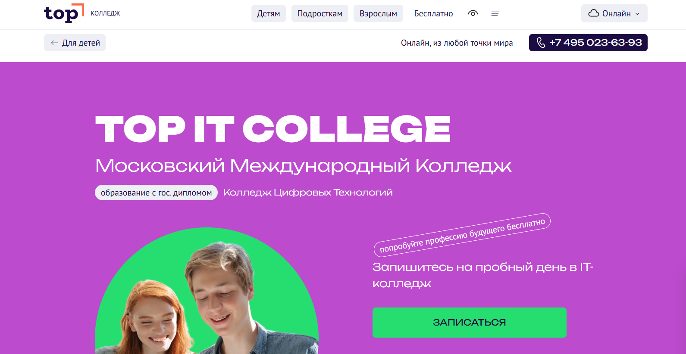
✅ Официальный сайт: online.top-academy.ru
- 💸 Стоимость – условия уточняются при подаче заявки; доступны программы в удобных форматах обучения, в том числе онлайн.
- 📚 Формат – дистанционный формат, онлайн формату, очный формат; занятия проходят дистанционно или очно, используется применение дистанционных технологий и электронных учебных материалов.
- ⏳ Продолжительность – сроком обучения от двух лет, в зависимости от выбранной программы на базе 9 классов или 11 классов.
- 📜 Документ – выпускники получают государственные дипломы установленного образца о среднем профессиональном образовании.
Колледж предоставляет студентам доступные онлайн решения и форматы обучения, подходящие тем, кто совмещает учебу и работу. Занятия проходят в режиме онлайн и на образовательных платформах, что обеспечивает удобный формат учебы и гибкий график. Студенты обучаются по современным образовательным программам, которые включают практических занятий больше, чем теории. Выпускники получают качественные знания, развивают профессиональные навыки и получают среднее профессиональное образование за счет современных образовательных технологий. Учебные процессы построены так, что студенты проходят обучение с поддержкой преподавателей, а процессом обучения можно управлять в любом удобном режиме. Образование дистанционно подходит тем, кто стремится выбрать профессию в цифровой сфере и получить среднее профессиональное образование с возможностью дальнейшего трудоустройства.
Направления подготовки:
- Разработка программного обеспечения
- Компьютерная графика и дизайн
- Эксперт по кибербезопасности
- Интернет-маркетинг, медиа и PR
- Специалист по AI
- Юриспруденция в IT
Преимущества и особенности:
- использование современных технологий и информационных платформ в образовательном процессе;
- возможность обучаться дистанционно или очно, выбирая любую форму учебы;
- практическая подготовка и стажировки у работодателей;
- поддержка преподавателей и кураторов на всех этапах обучения;
- современная материальная база колледжа и комфортная учебная среда;
- открытые защиты проектов с участием работодателей;
- гибкие форматы, позволяющие совмещать учебу с работой.
Отзывы учеников:
Студенты чаще всего отмечают удобный формат онлайн-обучения, качественные учебные материалы и поддержку преподавателей. Многим нравится, что занятия проходят полностью дистанционно, а процессом обучения можно управлять в любое удобное время. Также подчеркивают практическую направленность и возможность раннего старта в профессии.
Перейти на официальный сайт8. Фоксфорд Колледж
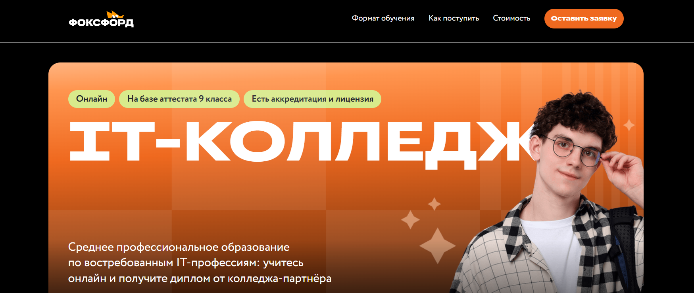
✅ Официальный сайт: foxford.ru
- 💸 Стоимость – от 200 ₽ в месяц при господдержке, возможна оплата частями, образовательный кредит под 3 %, налоговый вычет и использование материнского капитала.
- 📚 Формат – занятия проходят в режиме онлайн: живые лекции, записи уроков, практические задания, тесты, онлайн-сессии, консультации с кураторами, доступ к электронным учебным материалам.
- ⏳ Продолжительность – программы среднего профессионального образования сроком обучения 3 года 10 месяцев.
- 📜 Документ – выпускники получают дипломы государственных образцов: СПО от колледжа-партнера и диплом о профессиональной переподготовке от Фоксфорда.
Колледж ориентирован на современные образовательные программы, где учебные процессы реализуются в дистанционном формате и позволяют студенту использовать преимущества цифровых технологий. Форматы обучения подходят выпускникам 9 классов, абитуриенты могут поступить без ЕГЭ и выбрать профессию в сфере IT. Студенты получают качественные знания, формируют профессиональные навыки и совмещают учебу с личными делами благодаря гибкому формату учебы. Образовательный процесс построен с применением дистанционных технологий, занятия проходят дистанционно, а экзамены проходят онлайн в удобный формат. Колледжи предлагают программы, которые обеспечивают профессиональную подготовку и позволяют выпускникам уверенно выходить на рынок труда. После окончания колледжа студенты получают дипломы государственных образцов и могут продолжить обучение в вузах или начать карьеру сразу после окончания обучения.
Направления подготовки:
- Программы среднего профессионального образования: дизайн, программирование.
- Дополнительные образовательные программы: профессиональная переподготовка и повышение квалификации в IT-направлениях.
Преимущества и особенности:
- удобный формат обучения – занятия проходят онлайн с доступом в любое удобное время;
- использование современных образовательных технологий и электронных учебных материалов;
- студенты проходят практику в компаниях-партнерах и получают реальные проекты в портфолио;
- поддержку преподавателей и кураторов предоставляют на всех этапах процесса обучения;
- выпускники получают возможность поступить в вузы без экзаменов и продолжить профессиональный путь;
- колледжи предлагают гибкие формы обучения, которые позволяют совмещать учебу и работу;
- образование дистанционно подходит ученикам любых регионов и обеспечивает доступных онлайн–ресурсов;
- развитие карьерных возможностей через подготовку к трудоустройству и консультациях со специалистами.
Отзывы учеников:
Студенты отмечают удобный дистанционный формат, качественные знания и поддержку кураторов. Многие подчеркивают, что занятия проходят онлайн в комфортном режиме, а практические задания помогают закреплять навыки. Также выделяют возможность раннего старта карьеры и доступность образовательных платформ.
Перейти на официальный сайт9. Цифровой колледж Skillbox
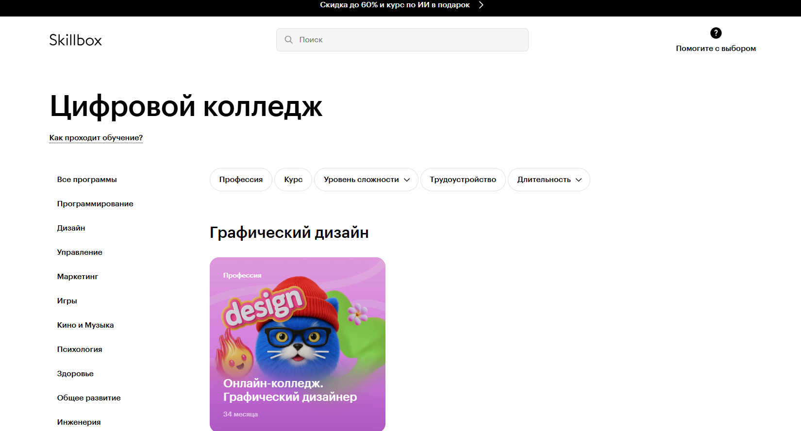
✅ Официальный сайт: skillbox.ru
- 💸 Стоимость – обучение ведется по коммерческим программам, стоимость зависит от направления и действует скидка до 60 %; при оформлении предоставляется курс по ИИ в подарок
- 📚 Формат – занятия проходят дистанционно, в онлайн формате: видеолекции, тесты, практические задания, электронные учебные материалы, консультации преподавателей и поддержка кураторов
- ⏳ Продолжительность – программы среднего профессионального образования рассчитаны примерно на 34 месяца, срок может различаться в зависимости от выбранной специальности
- 📜 Документ – выпускники получают дипломы государственных образцов СПО после окончания обучения
Цифровой колледж Skillbox – это полностью дистанционный формат учебы, разработанный для выпускников 9 классов и тех, кто хочет получить среднее профессиональное образование в режиме онлайн. Здесь применяются дистанционные технологии и современные образовательные платформы, позволяющие студентам проходить занятия в удобное время и совмещать учебный процесс с работой. Форматы обучения ориентированы на практические навыки и работу с цифровыми технологиями. Образовательный процесс строится на видеолекциях, заданиях и консультациях, а занятия проходят полностью онлайн. Студенты проходят учебные материалы по гибкому графику и получают качественные знания с поддержкой преподавателей. Такой дистанционный формат предоставляет студентам возможность выбора специальности и получения диплома без очного формата. Выпускники получают официальный документ о завершении программы и могут продолжать образование или выходить на рынок труда.
Направления подготовки:
- Графический дизайн
- Fullstack-разработка
- Frontend-разработка
- Python-разработка
Преимущества и особенности:
- полностью дистанционный формат обучения без необходимости посещения аудиторий;
- удобный формат учебы, позволяющий выбирать любое удобное время;
- использование электронных учебных материалов и современных образовательных технологий;
- поддержка преподавателей и кураторов на всех этапах;
- программы среднего профессионального образования с применением дистанционных технологий;
- выпускники получают государственные дипломы;
- возможность совмещать учебу и работу благодаря гибкому расписанию;
- акцент на формировании практических навыков, востребованных в цифровой экономике.
Отзывы учеников:
Студенты отмечают удобный формат дистанционного обучения, возможность совмещать учебу и работу, доступ к учебным материалам в онлайне и постоянную поддержку кураторов. Многие подчеркивают, что образовательные программы построены логично, задания помогают закреплять знания, а выпускники получают реальные навыки для профессий в сфере IT и дизайна.
Перейти на официальный сайт10. IT-колледж Хекслет
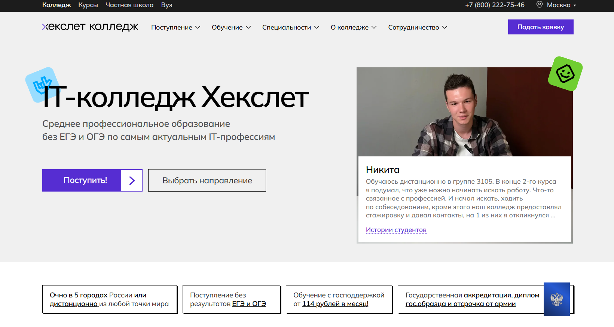
✅ Официальный сайт: hexly.ru
- 💸 Стоимость – обучение от 140 ₽ в месяц с господдержкой или от 15 000 ₽ при оплате собственными средствами; предусмотрены скидки при единовременной оплате, для многодетных семей и других категорий
- 📚 Формат – занятия проходят в дистанционном формате и очном формате; в режиме онлайн используются образовательные платформы, электронные учебные материалы, видеолекции, тесты и практические задания; процесс обучения поддерживается кураторами и преподавателями-практиками
- ⏳ Продолжительность – программы среднего профессионального образования реализуются сроком обучения от 2.10 лет в зависимости от направления и выбранной формы
- 📜 Документ – по окончании обучения студенты получают дипломы государственных образцов; выпускники получают возможность поступить в вузы без ЕГЭ по внутренним экзаменам
В образовательном учреждении создается удобный формат учебы, позволяющий обучаться дистанционно и совмещать учебу с работой благодаря применению дистанционных технологий и современных образовательных технологий. Занятия проходят дистанционно или очно, а процессом обучения руководят действующие IT-специалисты, что обеспечивает качественное образование и развитие профессиональных навыков. Учебные программы адаптированы под цифровую экономику и позволяют выпускникам 9 классов выбрать профессию уже на старте обучения. Колледжу удается выстраивать образовательный процесс на современных цифровых технологиях, что делает его цифровой колледж с широким спектром доступных онлайн направлений. Студенты получают знания, которые позволяют выпускникам школ осваивать информационные технологии и накапливать практическую подготовку. Учусь дистанционно здесь возможно из любого города, а занятия проходят полностью в онлайне с применением дистанционных технологий. Образование дистанционно дает возможность выбрать профессию и получать качественные знания в удобных условиях, а образовательных программах уделяется внимание практике и актуальным навыкам.
Направления подготовки:
- Информационные системы и программирование
- Сетевое и системное администрирование
- Дизайн
- Реклама
- Киберспорт
- Разработка игр, AR и VR
- Графический дизайн
- Интеграция ИИ и аналитика
- Роботизированные системы производства
- Информационная безопасность
- Коммерция и интернет-маркетинг
Преимущества и особенности:
- Применение дистанционных технологий и удобный формат для любого графика
- Поддержка кураторов, которые помогают студентам проходить учебный процесс и адаптироваться
- Стажировки у партнеров работодателей и возможность пройти практику в IT-компаниях
- Образовательный процесс построен на современных цифровых технологиях и практических занятиях
- Выпускники получают дипломы государственных образцов и могут поступить в вузы без ЕГЭ
- Учебные программы позволяют студенту развивать практические навыки и готовиться к трудоустройству
- Комфортная образовательная среда и доступ к цифровым учебным материалам
- Возможность обучения в очных кампусах или полностью дистанционном формате
Отзывы учеников:
Студенты часто отмечают удобный формат, качественные знания, доступных преподавателей и поддержку кураторов на всех этапах обучения. Положительно оценивают практических специалистов, занятия проходят в современном онлайне, а образовательный процесс предоставляет студентам возможность быстро наращивать навыки. Выпускники подчеркивают, что колледж помогает в трудоустройстве и дает реальные проекты для портфолио.
Перейти на официальный сайт11. Колледж Университета Синергия
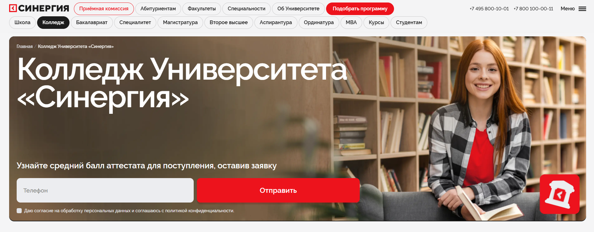
✅ Официальный сайт: synergy.ru
- 💸 Стоимость – возможна оплата от 150 ₽ в месяц, предусмотрены льготы, скидки, материнский капитал и кредит с господдержкой
- 📚 Формат – очный формат, заочная и дистанционная форма, полностью дистанционный формат, занятия проходят онлайн через образовательные платформы с использованием дистанционных технологий, электронных учебных материалов, тестов и практических заданий
- ⏳ Продолжительность – сроком обучения в зависимости от направления, программы среднего профессионального образования после 9 классов и 11 классов
- 📜 Документ – выдаются дипломы государственных образцов; выпускники получают государственные дипломы установленного образца
Колледж в московском университете предоставляет студентам доступных онлайн решений и удобный формат учебы для тех, кто выбирает профессиональным образованием в современных образовательных программах. Здесь студенты получают качественные знания, совмещают учебу с практическими занятиями и учатся дистанционно в режиме онлайн. Учебные процессы реализуются на образовательных платформах с применением дистанционных технологий и информационных систем, что позволяет студенту сохранять любое удобное расписание. Колледжи предлагают современные форматы обучения, которые помогают студентам формировать профессиональных навыков и получать качественное образование. После окончания колледжа выпускники получают дипломы государственных образцов и могут поступить в вузы без вступительных экзаменов. Цифровой колледж создает условия, которые позволяют выпускникам успешно продолжать путь в цифровой экономике, а образовательный процесс обеспечивает поддержку преподавателями на всех этапах обучения.
Направления подготовки:
- Медицина: лечебное дело, сестринское дело, гигиенист стоматологический
- IT и инженерия: программирование, разработка, робототехника, игры
- Бизнес и менеджмент: финансы, маркетинг, юриспруденция, бухгалтерский учет
- Психология
- Педагогика
- Творческие специальности: дизайн, анимация, кино, музыка
Преимущества и особенности:
- применение современных технологий и полностью дистанционном формате;
- доступ к цифровых технологий и образовательных платформ;
- студенты обучаются с поддержкой преподавателей и кураторов;
- занятия проходят дистанционно или очно по выбору студента;
- программы среднего профессионального образования доступны после 9 классов;
- форматы обучения позволяют совмещать учебу и карьеру;
- выпускники получают качественные сведения и практических навыков для будущей профессии;
- колледж предоставляет студентам возможность прохождения практикумов и стажировок.
Отзывы учеников:
Студенты отмечают удобный формат обучения, возможность учиться дистанционно, доступ к электронным учебным материалам и поддержку преподавателей. Чаще всего выделяют, что занятия проходят в гибком режиме онлайн, а программы помогают быстро получить профессию. Многие выпускники подчеркивают, что колледж кэси ориентирован на современные профессиях и обеспечивает хорошим сопровождением на пути к трудоустройству.
Перейти на официальный сайт12. Колледж КЭСИ – Цифровой колледж дистанционного формата
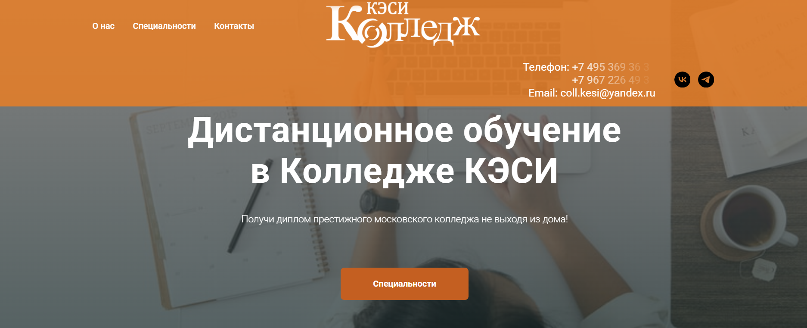
✅ Официальный сайт: cesi.college
- 💸 Стоимость – заочная форма от 80 000 рублей в год, очно-заочная от 130 000 рублей; возможна оплата поэтапно, использование материнского капитала и образовательных кредитов
- 📚 Формат – занятия проходят онлайн, используются современные образовательные платформы, вебинары, тесты, электронные учебные материалы, автоматизированная проверка, доступ к лекциям 24/7
- ⏳ Продолжительность – срок обучения от 2 лет 6 месяцев до 3 лет 10 месяцев в зависимости от выбранной специальности
- 📜 Документ – выпускники получают дипломы государственных образцов без указания формы обучения
Колледж работает в полностью дистанционном формате, обеспечивая удобный формат учебы для абитуриентов из любых регионов. Образовательный процесс построен на сочетании цифровых технологий и практикоориентированных учебных программ, что позволяет студентам получать качественные знания и развивать профессиональные навыки. Лекции проходят в режиме онлайн, а занятия проходят дистанционно с применением дистанционных технологий и участием кураторов, которые помогают студентам на всех этапах. Благодаря гибкости обучения можно совмещать учебу с работой, семейными делами и другими обязанностями, выбирая любое удобное время. Электронный кампус предоставляет студентам доступ к учебным материалам, заданиям и вебинарам, что обеспечивает современный формат обучения. Выпускники получают необходимые компетенции для дальнейшего поступления в вузы и построения карьеры.
Направления подготовки:
- Банковское дело
- Торговое дело
- Экономика и бухгалтерский учет
- Юриспруденция
- Информационные системы и программирование
- Графический дизайн
Преимущества и особенности:
- полностью дистанционный формат, позволяющий обучаться из любого региона;
- использование современных образовательных технологий и электронной платформы;
- практика на реальных программах и кейсах партнерских компаний;
- гибкое расписание, позволяющее совмещать учебу и работу;
- личные кураторы и поддержка преподавателей в режиме онлайн;
- возможность обучаться сразу на двух специальностях;
- доступ к электронным учебным материалам и библиотеке 24/7;
- выпускники получают государственные дипломы установленного образца.
Отзывы учеников:
Студенты отмечают удобный онлайн формат, четкую организацию учебного процесса и поддержку преподавателей. В отзывах регулярно подчеркивают доступность материалов, комфортный режим онлайн занятий и возможность совмещать учебу с работой. Многие выпускники говорят о качественной подготовке и внимательной работе кураторов, а также о гибкости дистанционного формата и современных подходах к обучению.
Перейти на официальный сайтПреимущества обучения в онлайн-колледже
Дистанционное обучение имеет ряд сильных сторон, благодаря которым оно набирает популярность среди молодежи и взрослых специалистов.
- Свободный график: можно учиться в удобное время.
- Экономия времени — отсутствие поездок в учебное заведение.
- Доступ к материалам 24/7.
- Возможность совмещать обучение с работой.
- Современные форматы: интерактивы, симуляции, VR-лаборатории.
- Обучение доступно из любого города и страны.
Как стать студентом онлайн-колледжа и где учиться?
Поступить в онлайн-колледж достаточно просто — большинство принимает документы через интернет. Диплом после обучения ничем не отличается от очного при условии государственной аккредитации образовательного учреждения.
- Выбрать аккредитованный онлайн-колледж и программу.
- Подать документы: паспорт, аттестат, заявление.
- При необходимости пройти вступительные испытания (не везде требуются).
- Заключить договор и получить доступ в личный кабинет студента.
Какие профессии можно получить в онлайн-колледже?
Современные дистанционные колледжи предлагают десятки направлений, ориентированных на цифровую экономику и востребованные рынки.
- Программирование и системное администрирование.
- Маркетинг, реклама и PR.
- Графический и веб-дизайн.
- Бухгалтерский учет и финансы.
- Логистика и управление цепочками поставок.
- Юриспруденция (среднее профессиональное).
- Туризм и гостиничное дело.
- Психология и социальная работа.
Что такое онлайн-колледж и чем он отличается от очного формата?
Онлайн колледж — это образовательное учреждение, где занятия проходят дистанционно с использованием дистанционных технологий, современных образовательных платформ и электронных учебных материалов. В отличие от очного формата, здесь студенты учатся в режиме онлайн, выбирают удобный формат и могут совмещать учебу с работой. Колледжи предлагают разные форматы обучения, что позволяет студенту гибко строить свой процесс получения образования.
Какие преимущества дает дистанционный формат обучения в колледже?
Дистанционный формат обеспечивает любое удобное время обучения, доступ к лекциям и заданиям на образовательных платформах, поддержку преподавателей и кураторов, а также возможность учиться из любого региона при наличии доступа к интернету. Современные технологии позволяют студентам получать качественные знания и развивать профессиональные навыки без необходимости посещать очную форму.
Можно ли получить государственный диплом после окончания онлайн-колледжа?
Да, выпускники получают дипломы государственных образцов. После окончания колледжа в дистанционном формате студенты получают тот же документ, что и выпускники очной формы. Государственные дипломы позволяют выпускникам поступить в вузы, выбрать профессию и начать карьеру.
Как проходит поступление?
Поступление осуществляется в режиме онлайн: абитуриенты подают заявку через сайты колледжей, загружают документы и проходят зачисление без вступительных экзаменов (кроме специальностей, где предусмотрены творческие тесты). Колледжи предлагают программы среднего профессионального образования для поступающих после 9 классов и 11 классов.
Какие специальности доступны в онлайн-формате?
Онлайн колледжи предлагают программы в сферах IT, программирования, дизайна, экономики, цифровой экономики, менеджмента и других направлений. Такой широчайший выбор специальностей позволяет выпускникам школ выбрать профессию, которая востребована на рынке труда.
Как проходит учебный процесс в дистанционном формате?
Занятия проходят полностью онлайн: студенты обучаются на цифровых образовательных платформах, просматривают видеолекции, выполняют задания, участвуют в консультациях, практических занятиях и тестах. Современные образовательные технологии и применение дистанционных инструментов позволяют студентам получать качественное образование и профессиональную подготовку.
Как обеспечивается поддержка преподавателей при дистанционном обучении?
Преподаватели и кураторы предоставляют студентам поддержку в режиме онлайн: отвечают на вопросы, проводят консультации, помогают с заданиями и сопровождают процессом обучения. Информационных технологиях позволяют студентам получать обратную связь быстро и удобно.
Можно ли обучаться дистанционно и параллельно работать?
Да, многие студенты учатся дистанционно, потому что дистанционный формат позволяет совмещать учебу и работу. Благодаря удобному формату занятия проходят в удобное время, а образовательный процесс адаптирован под занятых студентов.
Какие учебные материалы используются в онлайн-колледже?
Студентам предоставляются электронные учебные материалы, видеолекции, презентации, практические задания, тесты и доступ к образовательным платформам. Использование современных технологий и цифровых процессов обеспечивает качественные знания и развитие профессиональных навыков.
Как проходит итоговая аттестация в онлайн колледжах?
Итоговые экзамены и государственные экзамены проходят онлайн или в формате, установленном колледжем. По окончанию обучения происходит подтверждение квалификации, и студенты получают дипломы установленного образца.
Получают ли выпускники онлайн-колледжей знания, достаточные для трудоустройства?
Выпускники получают качественные знания, профессиональные навыки, проходят практику и могут уверенно выходить на рынок труда. Современные программы среднего профессионального образования позволяют выпускникам работать по специальности и сотрудничать с работодателями в выбранной сфере.
Можно ли после окончания обучения поступить в университет?
Да, окончание колледжа позволяет выпускникам поступить в вузы на очные или дистанционные формы обучения. Получения диплома среднего профессионального образования открывает путь к продолжению обучения в московском университете, московского института или любом другом вузе.
Как выбрать профессию в колледже?
Онлайн колледжи предлагают программы разных направлений и предоставляют студентам помощь в выбору специальности. Абитуриенты могут ориентироваться на свои интересы, карьерные возможности, рекомендации экспертов и востребованность профессий на рынке.
Какой срок обучения в онлайн-колледже?
Сроком обучения являются от 2 до 4 лет в зависимости от специальности, форм обучения и базы поступления (база 9 классов или 11 классов). Образовательных программах реализуются в дистанционном формате и позволяют студентам учиться в удобное время.
Предоставляют ли онлайн-колледжи практику и стажировки?
Да, студенты проходят практику, участвуют в практических занятиях и получают практическую подготовку. Это помогает студентам освоить необходимые навыки и легче трудоустроиться после окончания обучения.
Какие преимущества дает цифровой колледж?
Цифровой колледж использует современные образовательные технологии, электронных учебных платформы и цифровых технологий, которые позволяют студенту эффективно учиться, получать знания и развивать навыки для цифровой экономики.
Как подать заявку на поступление в онлайн-колледж?
Чтобы поступить, абитуриенты подают заявку на сайтах колледжей, загружают документы по аттестату, проходят зачисления и получают доступ к учебных программ. Процессы проходят онлайн и очень удобны для современных студентов.
------------------------------------------------
Реклама. Информация о рекламодателе по ссылкам в статье.